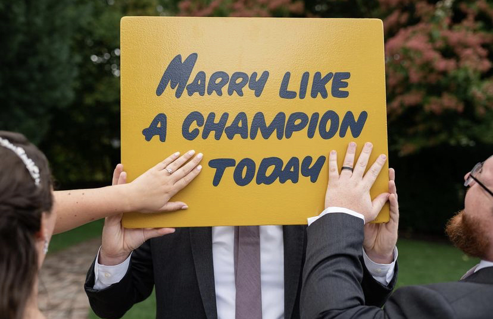
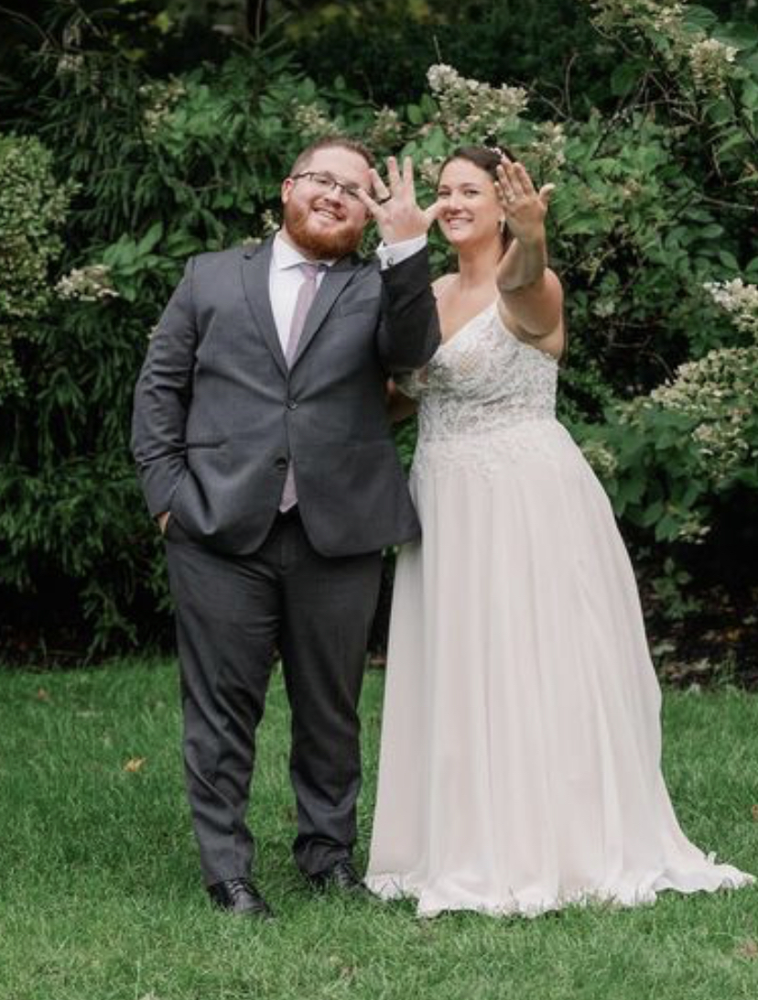
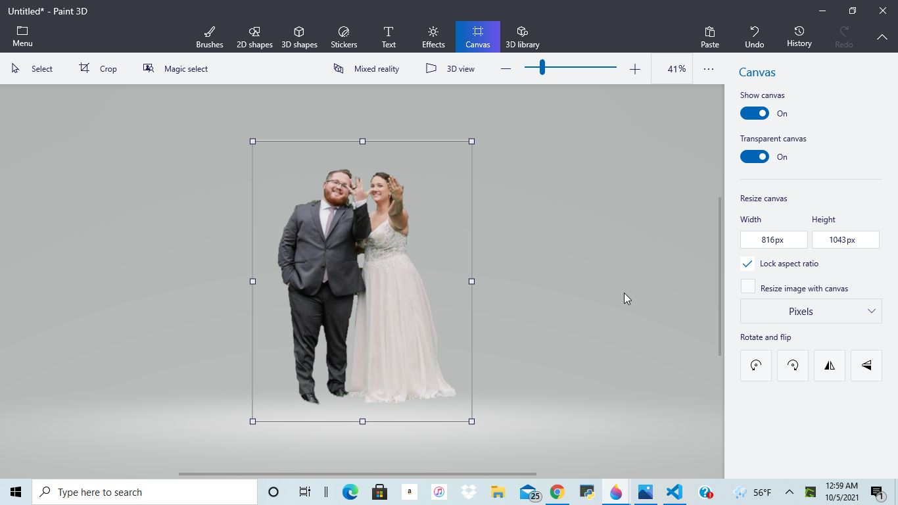
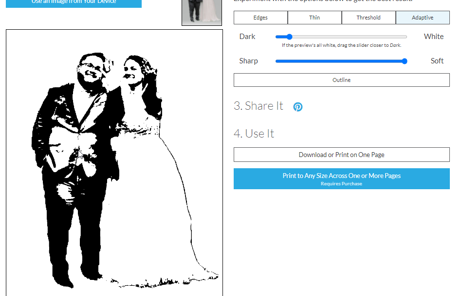
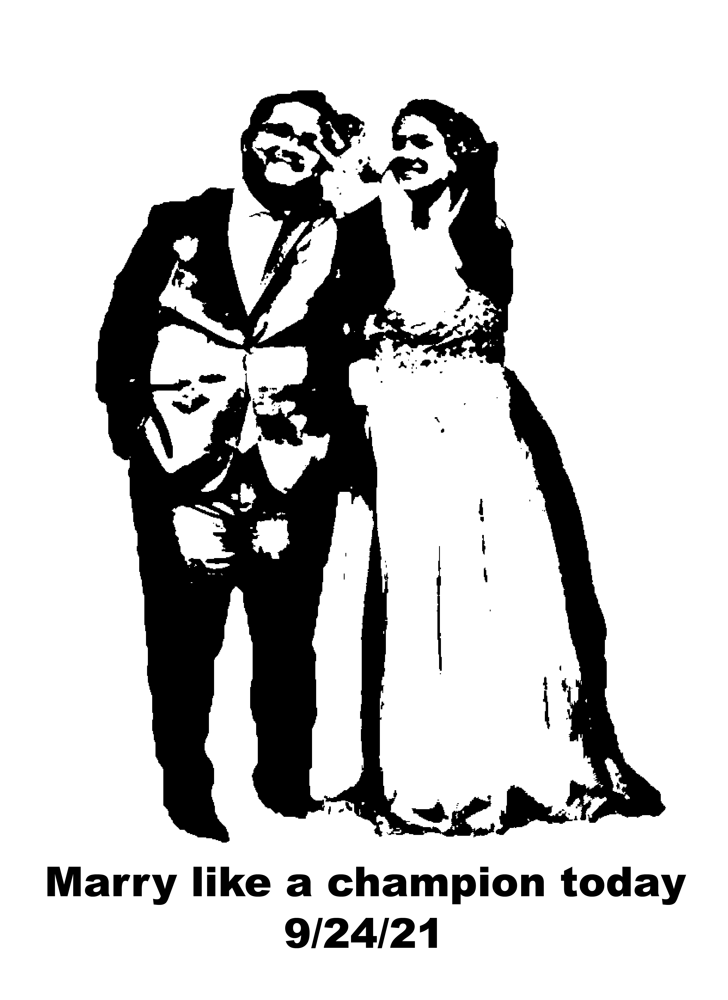
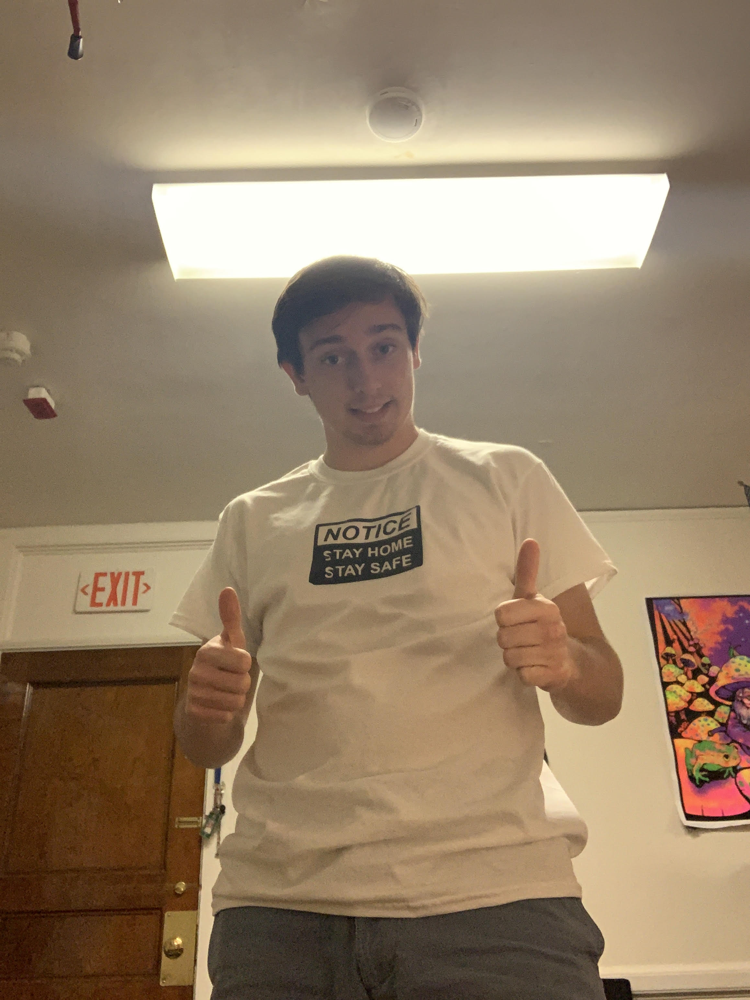

Up until a few days ago I thought Vinyl Cutting was something you did if you really didnt like an album you bought. What Vinyl Cutting really is, is the techinque of using a machine to shape outlines of digital images onto vinyl sheets. The process starts with taking a JPEG or PNG image, and importing it into a cutting software attached to a vinyl cutting machine. The cutting machine has a series of rollers and a needle head that can move diagonally and slightly vertically across the canvas. With these, the machine takes the image file, processes where the outlines should be, and is able to cut across those lines. It could be argued that this isnt digital fabrication as the CAD is done mostly by finding an image online and just popping it onto a generator but I would say that this is definitly digitial fabrication. For one, the design is all done digitally, using an image that was taken digitally, and the process happens through a bootleg Mac/Windows computer. I count this as fabrication too becuase were heating and melting a material to shape it how we want, like we would do with a 3D printer. The icing on the cake is that I learned about it in a class called Digital Fabrication, so it must count.
Computer images are all based off of pixels. Pixels are like a a grid on a sheet of paper, and an artist would paint each pixel with a color in order to make a pretty picture. This is how Raster images are made, each pixel gets a value which translates into a specific color. Vector images on the other hand get a bit more complicated. Instead of painting with boxes, they paint with math (gross). Vecot images break the image down into shapes, lines, and curves, and has mathimatical formulas for all of this. A good analogy to creating a vector image would be creating a smiley face on MS Paint, where you make a big circle for the head, two smaller circles for the eyes, and a curve for the mouth. One of the neat reasons there is a difference in these image types is that with a Raster image you cant really increase the size of the image, becuase each pixel wil have to stretch to cover more of the image and it will look all blocky. Vector images on the other hand can incresaea in size with relative ease becuase the shape formulas will just have larger integer values. We use JPEG's for this procoess, which are Raster images.
My design idea was creative, cute, and fun. Our rugby coach had finally gotten married last week, and I thought it would be a really good idea to make him a wedding shirt and give it to him as a team gift. After some instagram stalking I was able to find the image I wanted to use, and the quote I wanted to put under it. "Play like a Champion" was him and his wife's motivational quote through there college athletic carrers, and they changed it to "Marry Like a Champion" for there wedding.
 Above is the original image, and the proof that they really were big on the whole "Verb" Like A Champion Today thing
Paint 3D is really cool way to make transparents out of images. It was a lot like Adobe Photoshop to find the right selection, and deleting everything else.
After finding the image I wanted the next step was to turn the photo into something T-Shirt-able. To do this I had to cut out the couple, and make a PNG. This step was done pretty easily in Paint 3D, and I was ready to move on. Next, I used the website called RapidResizer to make a sketch outline shape of my photo. This step took a decent amount of time because I had to fiddle with the sliding values to get something that I thought would print easily, and still looked like the people it was supposed to represent.
The stencil tool worked exactly how I wanted, but it still had too many fine details I didnt notice on my first look...more on that later
The next step was moving this stencil image to Adobe Illistrator to add my text. Adding text was super easy, I just used the text, typed what I want and centered it. If there was a tool to remind me to capitalize my letters that would have made this even better. I added the quote, and the date for some extra cute points, and so Coach would have a reminder of when his anniversary is so he doesnt get in trouble.
AI file is ready!
Its a common trope that machines are better then humans, and were all going to be replaced by our machine overlords. Well today I scored a point for team mankind! My design was too complicated awesome for the Vinyl Cutter to figure out and it kept getting jammed up. It turns out there are a ton of smaller circles in the design file that I didnt notice, and these kept making the machine freak out. I tried cutting this out multiple times but the vinyl cutter kept getting angry at me. Great sucsess for us human, great failure for my design
As sweet as the sentiment of the gift was, I dont think my coach would want to wear a shirt where him and his wife look like deep sea monsters.
After a few attempts, a lot of cuts from the Exacto Knife, and a bit of wasted vinyl, I realized the lab would be closing soon and I needed something to slap on a shirt. Remembering an instagram post I had seen earlier that day, I quickly looked up an image of a COVID saftey post, this one says "Notice, Stay Home, Stay Safe". I popped the JPEG into SureCutsALot, and moved the file to the bottom right hand side of the screen. After flipping the image, and resizing it, I loaded blue vinyl into the cutter glossy side down, and hit cut. After about a minute my design was done, and I started weeding. This weeding process was so much easier then the wedding pic becuase there werent any tiny spots messing up the design. I headed the hot press to 375 degrees, placed my shirt down, and placed my vinyl on top. I clamped the press shut and in 10 short seconds I had a shirt, and not a moment too soon. I walked out of the lab at 8:58 with a little bit of pride intact. While the design I wanted didnt work out, I havent given up on it. I think with a little more smoothing in CAD I can get my design to print smoothly, but for now I'm okay with my COVID shirt.
That sums it up! Design files can be found in google drive
DESIGN FILES HERE